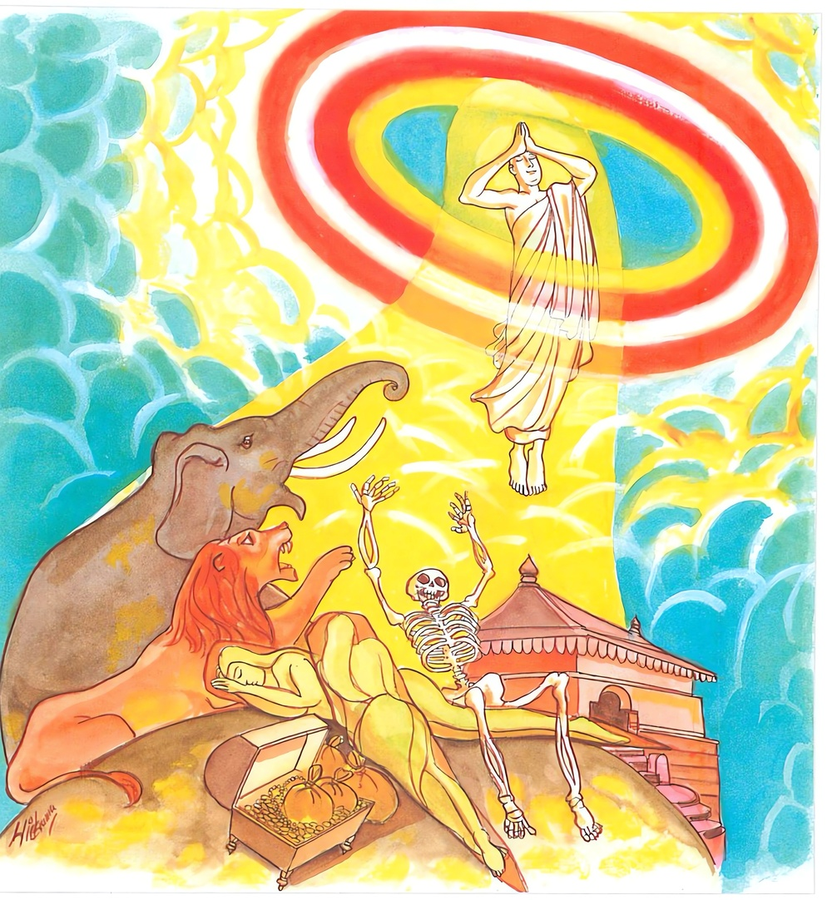

24-8 මාරයා පිළිබඳ වූ කථා පුවත
මෙම කතාව සද්ධර්ම සාගරයෙන් ද කියවන්න.
නිට්ඨං ගතො අසන්තාසී වීතතණ්හො අනඞ්ගණො
අච්ඡින්දි භවසල්ලානි අන්තිමො’යං සමුස්සයො.
යම් මහණෙක් නිෂ්ඨාවට (රහත්පලයට) පැමිණියේ වේ ද, (රාගාදි සන්ත්රාස නැති හෙයිනුත් ජීවිතාශා ප්රහීණ කළ හෙයිනුත් සිංහාදීන් ගෙන් වන සන්ත්රසයක් ද නැතියෙන්) නො තැති ගන්නා සුලු වේ ද, පහ වූ තෘෂ්ණා ඇත්තේ වේ ද, එහෙයින් ම රාගාදි අඞ්ගණ රහිත වේ ද (හෙවත් නිඃක්ලේශ වේ ද), භවගාමී සියලු ක්ලේශශල්යයන් උදුරා හැරැ පී ද, ඔහුගේ මේ අන්තිම ආත්මභාවය යි.

වීතතණ්හො අනාදානො නිරුත්තිපදකොවිදො
අක්ඛරානං සන්නිපාතං ජඤ්ඤා පුබ්බාපරානි ච
ස වෙ අන්තිමසාරීරො මහාපඤ්ඤො මහාපුරිසො’ති වුච්චති.
යම් මහණෙක් රහත්මඟින් පහ කළ භවතෘෂ්ණා ඇත්තේ ද, ස්කන්ධකාදියෙහි ආත්ම අත්මීය වශයෙන් ගැනුම් නැත්තේ ද, නිරුක්තිපදයන්හි (හෙවත් සිවු පිළිසැඹියාහි) දක්ෂ ද, අක්ෂරසමුදායයත් පුර්වාපරාක්ෂරයන් (යෙදෙන සැටි)ත් දන්නේ ද, කෙළවර අත්බව්හි සිටි හෙ තෙම ඒකාන්තයෙන් මහාප්රාඥයැ යි ද (සියලු කෙලෙසුන්ගෙන් මිදුනු හෙයින්) මහාපුරුෂයැ යි ද කියනු ලැබේ.
"නිට්ඨං ගතො” යන මේ ධර්ම දේශනය ශාස්තෲන් වහන්සේ සැවැත් නුවර දෙව්රම වැඩ සිටිය දී මාරයා නිමිති කරගෙන දේශනා කළහ.
එක් දිනක් නුසුදුසු කාලයෙහි බොහෝ තෙරවරු දෙව්රම් වෙහෙරට පිවිස (සැතපෙන තැන් නැතිව) එක් නමක් රාහුල තෙරුන් වසන ස්ථානයට ගොස් ඔහු නැගිටුවා තෙමේ එහි සැතපුණහ. උන්වහන්සේ නිදන්නට වෙන තැනක් නොදැක තථාගතයන් වහන්සේගේ ගන්ධ කුටියේ ඉදිරිපස වැතිරුනේය. එදින උන්වහන්සේ රහත්බවට පත්වී අවසන් වුයේය. වසවර්ති මාරයා රාහුල තෙරුන් ගඳකිළියේ ඉදිරිපස නිදා සිටිනු දැක මෙසේ සිතුවේය. තථාගතයන්ගේ ඇගිල්ලක් මෙන් වූ රාහුල තෙරුන්, ගඳකිළි දොරටුවේ නිදා සිටිය දී තමන් ගඳකිළිය තුළ නිදන්නේ ය. ඇගිල්ල රිදෙන කල තම මුළු සිරුරම රිදෙන්නාක් මෙන් වන්නේද? වශයෙන් සිතා ඔහු මහත් ඇත් රජකුගේ ස්වභාවයක් මවාගෙන අවුත් හොඩින් තෙරුන්ගේ සිරුර පරීක්ෂා කොට හොඩය හෙලා වටකොට මහත් හඩින් කුඤ්චනාදය කළේය. බුදුහු ගඳකිළිය තුළ වැඩ සිටියදීම ඒ මාරයා බව දැනගෙන, මාරය ඔබ වැනි සියදහස් ගණනකට වුවද මගේ පුතුට බියක් ඇතිකරලීමට නොහැකිය. මගේ පුතුද තැතිගැනීම් රහිත තෘෂ්ණා දුරුවුයේ මහා වීර්යවත් වුයේ මහා ප්රාඥයෙක් වුයේ යයි පවසා මේ ගාථාව දේශනා කළහ.
තණ්හාව දුරලා සියලු කෙළෙසුන් සිඳලු රහතන් වහන්සේ උපන් මුල් සිද ඇත්තේ එබැවින් බියක් හෝ සැකයක් ඔහුට නැත්මැයි.
නැති කොට කෙලෙස් සිව් පිළිසිඹියාව පත්ව
වසතිද යම් අයෙක් සසුනෙහි අරහත්ව
ඔහු තැති නො ගෙන මරුවාට ද බියපත්ව
බැබළෙති හැම දෙනා අතරෙහි ව පැණවත්ව
1. යමෙක් අර්හත්යයි කියන ලද නිට්ටාවට පැමිණියේවේ ද. තැති නොගන්නේද පහවු තෘෂ්ණ අත්තේද රාගාදි අඞගන රහිතද භවයෙහි උපතට හේතු වූ කෙලෙස් මුල් සින්දේ ද මේ ඔහුගේ අන්තිම ආත්ම භාවයයි
2. තෘෂ්ණාව නැතිකල - ආත්ම ආදී වශයෙන් නොගන්නා නිරුක්තියෙහි ත්රිපිටකයෙහි - සිව්පිළිසිඹියාවෙන් දක්ෂ යමෙක් අක්ෂරයන්ගේ සමුදාය පුවපර අක්ෂරයද දන්නේ අන්තිම ශරීරයේ පිහිටි හෝ ඒකාන්තයෙන් මහා ප්රඥයෙකි. මහා පුරුෂයෙකි.
තත්ථ එහි නිට්ඨං ගතො යනු මේ සසුනෙහි පැවිදි වුවන්ට අර්හත්වය නිෂ්ටාවනම් (ගමනේ අවසානය) එම තත්ත්වයට පත්වුයේ අසන්නාසී යනු ඇතුළත රාගාදී කෙලෙස් නොමැති නිසා තැති ගැනීම් රහිතය අවජින්දී භවස්සලානි භවගාමි සියලු උල් සිදේය සමුස්සයො - මේ මොහුගේ අන්තිම ශරීරයේ අනාදානො- ස්කන්ධ ආදීන්ගේ නිමාවයි. නිරුතතිපද කොවිදො - නිරුත්තීන්හි ද සෙසු පදයන්හි ද අරුත් දනී. සිව්පිළි සිඹියාවන්හි දක්ෂය. - සන්නිපාතං ජඤ්ඤා පුබ්බ පරානි වාති - යනු අකුරු සමුහය. ශබ්ද ශාස්ත්රය පිළිබඳ වු අක්ෂරාරාසිය පෙර අකුරුය මුල අකුරුය. මැද අකුර අග අකුරු දැනීම, යම් පදයක මුල අකුරු පෙනේ නම් මේ මුල අකුරට මේවා මැද හා අග අකුරු විය යුතුයයි ද, මැද අකුරු පෙනේ නම්, මේ මැද අකුරට මේවා මුල හා අග අකුරු විය යුතුයයි ද. අග අකුර පෙනේ නම් මේ අකුර මේවා මැද හා මුල අකුරු විය යුතු යයි ද, දන්නේ මේ මහා ප්රාඥ වන්නේ ය.
සවෙ අන්තිමසරීරො මේ අන්තිම ශරීරයයි අර්ථ ධර්ම නිරුක්ති, පටිභාන, යන සිව්පිළි සිඹියාවන්හිද, සීලාදියෙහි ද. හිමිකරු වී ප්රඥාවෙන් යුක්ත වුයේය. මහාපඤඤා "විමුතත චිතෙතා චාවාහං සාරි පුත්ත මහා පුරිසො 'වදාමී විමුක්තවු සිත් ඇති බැවින් මහාපුරිසො මහා පුරුෂ යයි යන අර්ථයි. දේශනාවසානයේ බොහෝ දෙන සෝවාන් ඵලාදියට පැමිණුනහ. මාරයා ගෞතමයන් විසින් මා හඳුනා ගත්තේ යයි පළා ගියහ.